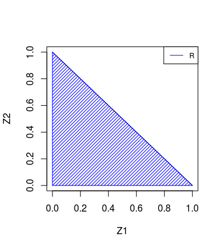

1 Conteúdo
1.1 Teorema da ruína do jogador
Notação
\[\begin{array}{cc} \xi & \text{montante agregado de indenizacao} \\ \hline E(\xi) & \text{valor esperado do total de indenizacoes} \\ \hline U_0 & \text{capital de garantia} \\ \hline P & \text{premio de risco} \\ \hline PP & \text{premio puro} \\ \hline \lambda & \text{carregamento de seguranca} \\ \hline \end{array}\]
Ruína acontecerá quando:
\[ \xi \ \ \geq U_0 \ \ + \ \ PP\] Sendo que:
\[ PP \ \ = \ \ P(1 + \lambda)\] Então temos que: \[ \xi \ \ \geq U_0 + P(1 + \lambda) \]
Seja \(\epsilon\) a probabilidade de ruína aceitável
\[\begin{array}{r} P[\xi \geq U_0 + P(1 + \lambda)] = \epsilon \\ P[\xi \geq \xi_\epsilon] = \epsilon \\ U_0 + P(1 + \lambda) = \xi_{\epsilon} \end{array}\]
\(\xi\) = \(x_1\) + \(x_2\) + \(x_3\) + … + \(x_k\)
\(x_i\) = valor pago na i-ésima indenização
k = número de sinistros
\(\xi\)(t) = processo estócastico composto
Por que as parcelas das somas são variáveis aleátorias e o número de parcelas (k) é uma variável aleátoria.
1.2 Equação fundamental da teoria do risco
\[\begin{equation} U_t = U_0 + (1 + \lambda)P - \xi_t \tag{1.1} \end{equation}\]Em um momento t o capital vai ser igual a capital de garantia mais o prêmio puro menos número de sinistros.
1.3 Convolução
Seja \(X_1\) uma variável aleátoria com função de densidade de probabilidade f.d.p \(f_{X_1}\)(\(X_1\)) e seja \(X_2\) uma variável aleátoria (va) com f.d.p \(f_{X_2}\) (\(X_2\)). Seja \(f_{X_1 X_2}\)(\(x_1 x_2\)) = f.d.p conjunta de \(X_1\) e \(X_2\). Qual a f.d.p de \(Y\) = \(X_1\) + \(X_2\)?

\[\begin{equation} \begin{split} \mathrm{F_{Y_{2}}}(y) & = \iint_{(X_{1} X_{2}) \in \mathbb{R}}^{} f_{X_{1}X_{2}}(x_{1} x_{2}) dx_{1}dx_{2}\\ \\ & = \int_{-\infty}^{\infty} \int_{- \infty}^{y-x_{2}} f_{X_{1}X_{2}}(x_{1}x_{2}) dx_{1}dx_{2}\\ \\ & \overset{ind}{=} \int_{-\infty}^{\infty} \int_{- \infty}^{y -x_{2}} f_{X_{1}}(x_{1})f_{X_{2}}(x_{2}) dx_{1}dx_{2} \ \ (1)\\ \\ f_{Y_{2}}(y) & = \frac{\partial F_{Y_{2}}(y)}{\partial y} \ \ (2) \\ & = \frac{\partial \int_{-\infty}^{\infty} \int_{- \infty}^{y-x_{2}} f_{X_{1}}(x_{1})f_{X_{2}}(x_{2}) dx_{1}dx_{2} }{\partial y} \ \ (1) \ \ em \ \ (2) \\ \end{split} \end{equation}\] \[\begin{equation} \int_{- \infty}^{\infty} \frac{\partial \int_{- \infty}^{y - x_{2}} f_{X_{1}}(x_{1})f_{X_{2}}(x_{2})dx_{1}dx_{2}}{\partial y}\\ \\ \end{equation}\] \[\begin{equation} \begin{split} \mathrm{F_{X_{1}}}(y - x_{2}) & = \int_{-\infty}^{y-x_{2}} f_{X_{1}}(x_{1})dx_{1} \ \ (3)\\ \\ & Substituindo \ \ (3) \ \ em \ \ (2)\\ f_{Y_{2}}(y) & = \int_{-\infty}^{\infty} f_{X_{1}}(y-x_{2}) f_{X_{2}}(x_{2})dx_{2} \\ \cdots f_{Y_{3}}(y) & = \int_{-\infty}^{\infty}f_{Y_{2}}(y-x_{3}) f_{X_{3}}(x_{3})dx_{3} \end{split} \end{equation}\]A extensão para a soma de duas variáveis aleatórias discreta é direta. Bastando a substituição da f.d.p pela função de probabilidade. (Integrais por somatórios)
Caso contínuo:
\[\begin{equation} f_{Y_{N}}(y) = \int_{-\infty}^{\infty}f_{Y_{N-1}}(y-x_{N})f_{X_{N}}(x_{N})dx_{N} \tag{1.2} \end{equation}\]Caso discreto:
\[\begin{equation} P[Y_{N} = y] = \sum_{Y_{N}}P[Y_{N-1} = Y - X_{N}]P[X_{N}=X_{N}] \tag{1.3} \end{equation}\]Esperança:
\[E[Y_{k}] = f_{k}(y) = \sum_{}f_{y,k}(y,k)=\frac{\sum_{k=0}^{\infty}f_{y|k}(y|k)P[Y=y]}{f_{y|k}(y)}\]
Algumas considerações sobre sinistro e custo.
Se o custo do sinistro é constante, então teremos que o montante agregado de indenizações será dado por:
Montante agregado de \(\xi\)
\(x_i\) = \(x_1\) + \(x_2\) + … + \(x_n\)
c = valor do sinistro
N = número de segurados
\(\xi\) = c\(x_1\) + c\(x_2\) + … + c\(x_N\)
\(\xi\) = c(\(x_1\) + \(x_2\) + … + \(x_N\))
\(\xi\) = c\(Y_N\) sendo que \(Y_N\) = \(\sum_{i=1}^N x_i\)
Temos então que o prêmio de risco será igual à:
\[\begin{equation} E(\xi) = E(cY_N) = cE(Y_N) \tag{1.4} \end{equation}\]lembrando que é válido somente se o montante a ser pago para cada sinistro for constante.
1.4 Preço Comercial
DA = Despesa Administrativa
CC = Comissão de Corretagem
L = Lucro
\[PC = \frac{PP}{(1 - [DA + CC + L])}\]
1.5 Preço Comercial Individual
m = Número de meses
N = Número de segurados
\[PC_{i,m} = \frac{PC}{m \ast N}\]